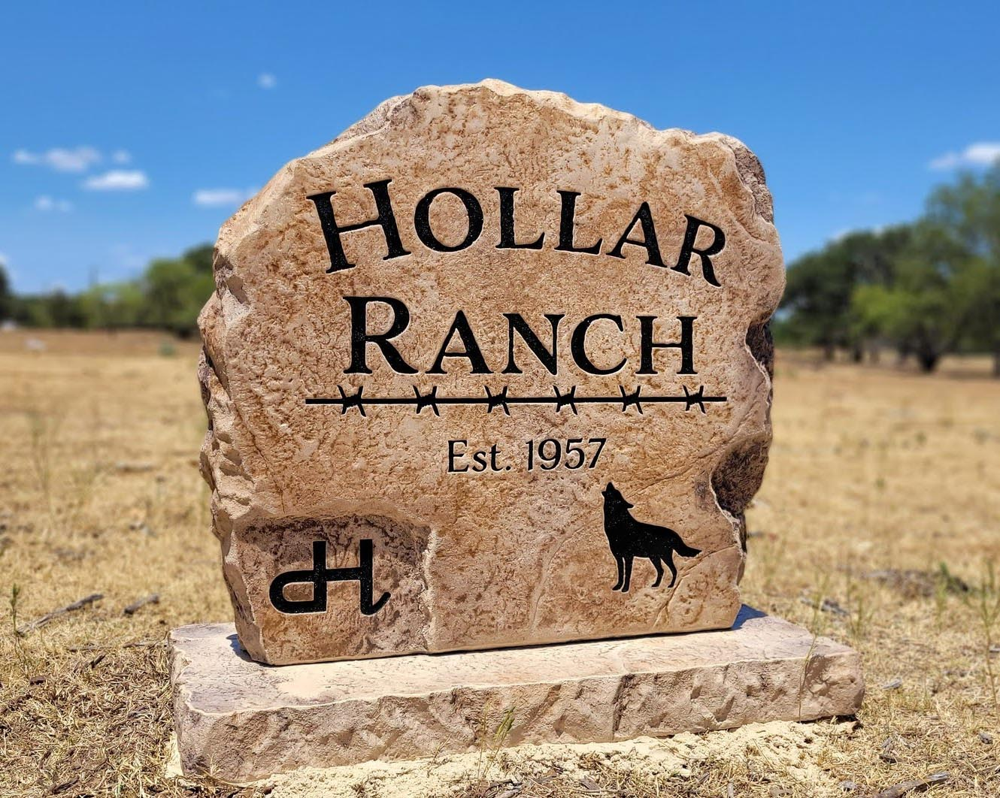

The Ultimate Guide to Choosing a Ranch Entrance Boulder
Welcome to Bedrock Boulders, where we craft stunning ranch entrance boulders that make a lasting impression. A well-designed boulder at your ranch gate is more than just a sign—it’s a statement of pride, heritage, and style. Whether you’re a Texas rancher looking for custom ranch signage Texas or exploring stone entrance signs for ranches elsewhere, this guide will help you choose the perfect engraved boulder for your property. Let’s dive into the key factors to consider when selecting your ranch entrance boulders.
Why Choose Ranch Entrance Boulders?
Ranch entrance boulders are a timeless choice for marking your property. Unlike metal or wooden signs, engraved boulders for ranch gates offer durability, low maintenance, and a natural aesthetic that blends seamlessly with the landscape. These engineered stone creations withstand harsh weather, from scorching Texas summers to freezing winters, ensuring your ranch’s entrance remains striking for generations.
A boulder sign also conveys a sense of permanence and tradition, making it ideal for family ranches, working farms, or luxury estates. At Bedrock Boulders, we specialize in crafting stone entrance signs for ranches that reflect your unique vision, whether it’s a bold monogram, a family crest, or a custom design.
Key Considerations for Choosing Your Ranch Entrance Boulder
Selecting the perfect boulder for your ranch gate involves balancing aesthetics, functionality, and practicality. Here are the essential factors to guide your decision:
1. Size and Scale
The size of your ranch entrance boulders should match the scale of your property and entrance. A small boulder may get lost at a sprawling ranch gate, while an oversized one could overwhelm a modest entry. Consider the following:
- Small to Medium Boulders (2-4 feet): Ideal for narrow gates or minimalist designs.
- Large Boulders (4-6 feet or more): Perfect for grand entrances or properties with long driveways.
- Placement: Ensure the boulder is visible from the road but doesn’t obstruct traffic or gate access.
At Bedrock Boulders, we help you choose a size that complements your ranch’s layout and enhances curb appeal.
2. Design and Customization
Your boulder is a canvas for custom ranch signage Texas style. From sleek, modern fonts to rustic, hand-chiseled lettering, the design possibilities are endless. Here are some ranch sign ideas to inspire you:
- Classic Engraving: Deeply carved names, initials, or ranch logos for a timeless look.
- Iconography: Add symbols like horses, cattle, or stars to reflect your ranch’s identity.
- Color Accents: Subtle paint or metallic finishes to make engravings pop.
Our team at Bedrock Boulders works with you to create engraved boulders for ranch gates that tell your story. Whether you want a polished, professional look or a rugged, natural vibe, we’ll bring your vision to life.
3. Material and Durability
At Bedrock Boulders, we use engineered stone to craft stone entrance signs for ranches that combine beauty and resilience. Engineered stone offers:
- Weather Resistance: Withstands rain, UV rays, and temperature swings without fading or cracking.
- Custom Finishes: Choose from smooth, polished surfaces or textured, natural looks.
- Low Maintenance: Unlike wood or metal, our boulders require minimal upkeep to stay pristine.
Our stones are designed to endure the toughest conditions, making them a smart investment for Texas ranches and beyond.
4. Installation and Placement
Proper installation ensures your ranch entrance boulders stand out and stay secure. Consider:
- Foundation: A stable base prevents shifting or leaning over time.
- Lighting: Solar or low-voltage lights can highlight your boulder at night, enhancing visibility and elegance.
- Landscaping: Pair your boulder with native plants or gravel for a cohesive look.
Our team at Bedrock Boulders handles every aspect of installation, ensuring your engraved boulders for ranch gates are perfectly positioned and built to last.
5. Budget and Value
While custom ranch signage Texas is an investment, it adds significant value to your property. Factors affecting cost include:
- Boulder size and complexity of the engraving.
- Customization level (e.g., intricate designs or logos).
- Installation requirements, such as site preparation or lighting.
At Bedrock Boulders, we offer options for every budget, from simple, elegant designs to elaborate, one-of-a-kind creations. Contact us for a quote tailored to your vision.
Ranch Sign Ideas to Spark Inspiration
Need some ranch sign ideas? Here are a few concepts to get you started:
- Heritage Design: Engrave your family name and the year your ranch was established for a legacy look.
- Western Flair: Incorporate Texas-inspired motifs like longhorns, stars, or barbed wire patterns.
- Modern Minimalism: Opt for clean lines and bold, sans-serif fonts for a contemporary feel.
- Nature-Inspired: Surround your boulder with native grasses or wildflowers for an organic aesthetic.
Browse our portfolio at Bedrock Boulders for more inspiration, or let us design a fully custom sign that captures your ranch’s spirit.
Why Choose Bedrock Boulders?
At Bedrock Boulders, we’re passionate about creating stone entrance signs for ranches that elevate your property’s entrance. Here’s why Texas ranchers trust us:
- Expert Craftsmanship: Our team uses state-of-the-art techniques to ensure precision and quality.
- Personalized Service: We collaborate closely with you to bring your vision to life.
- Local Expertise: As a Texas-based business, we understand the unique needs of ranchers in the Lone Star State.
Whether you’re in Austin, Houston, or the Hill Country, we’re here to deliver custom ranch signage Texas that makes your entrance unforgettable.
Ready to Create Your Ranch Entrance Boulder?
Your ranch deserves a bold, beautiful entrance that reflects its character and legacy. With ranch entrance boulders from Bedrock Boulders, you’ll get a custom, durable, and stunning sign that stands the test of time. Ready to explore ranch sign ideas or start designing your engraved boulders for ranch gates? Contact us today at (281) 901-0788 or visit www.bedrockboulders.net for a free consultation.
Let’s make your ranch entrance a landmark to remember!
Get a Free Quote